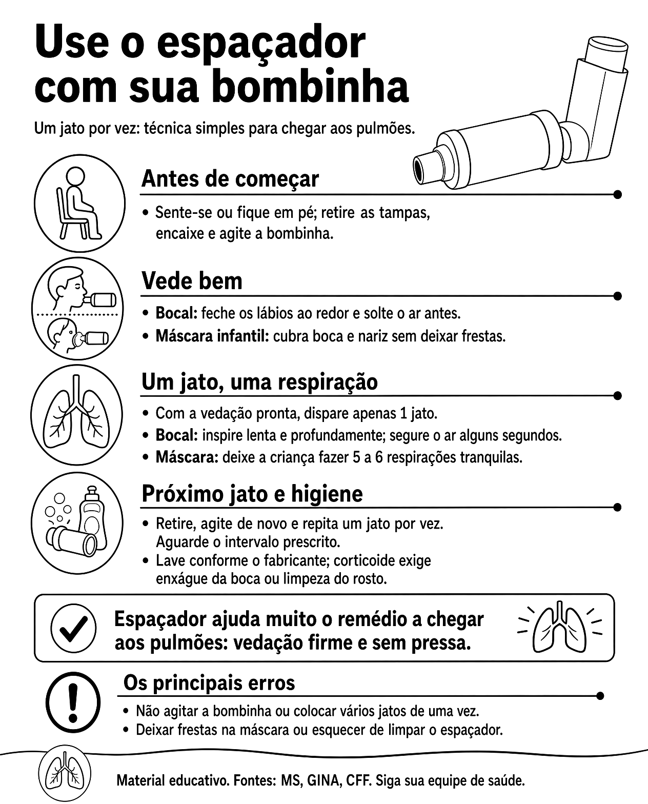

Use o espaçador com sua bombinha

Ler o texto do infográfico
Antes de começar
- Sente-se ou fique em pé; retire as tampas, encaixe e agite a bombinha.
Vede bem
- Bocal: feche os lábios ao redor e solte o ar antes.
- Máscara infantil: cubra boca e nariz sem deixar frestas.
Um jato, uma respiração
- Com a vedação pronta, dispare apenas 1 jato.
- Bocal: inspire lenta e profundamente; segure o ar alguns segundos.
- Máscara: deixe a criança fazer 5 a 6 respirações tranquilas.
Próximo jato e higiene
- Retire, agite de novo e repita um jato por vez. Aguarde o intervalo prescrito.
- Lave conforme o fabricante; corticoide exige enxágue da boca ou limpeza do rosto.
Espaçador ajuda muito o remédio a chegar aos pulmões: vedação firme e sem pressa.
Os principais erros
- Não agitar a bombinha ou colocar vários jatos de uma vez.
- Deixar frestas na máscara ou esquecer de limpar o espaçador.
Material educativo. Fontes: MS, GINA, CFF. Siga sua equipe de saúde.